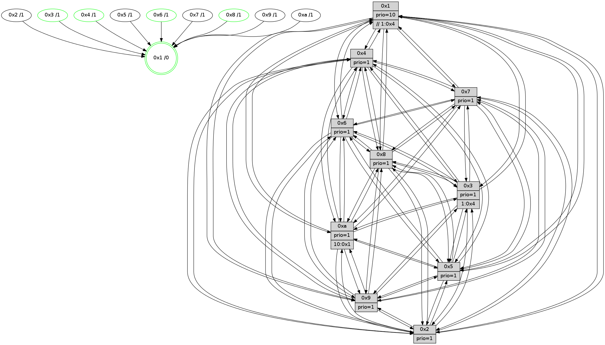

>> << IDX [start] -100 -25 -5 +0 +5 +25 +100 [1035.24457717]
 Previous packets
----------------------------------------------------------------------
1030.515780 beacon01(faad) #0 coord=01,02,03,04,05,06,07,0a,09,08 cycle=688.0ms assoc
-- color-indic=1 64 15 9d
1030.525763 beacon02(faad) #0 coord=01,02,03,04,05,06,07,0a,09,08 cycle=688.0ms assoc 64 86 ac
1030.535763 beacon03(faad) #0 coord=01,02,03,04,05,06,07,0a,09,08 cycle=688.0ms assoc 64 fc e1
1030.545764 beacon04(faad) #0 coord=01,02,03,04,05,06,07,0a,09,08 cycle=688.0ms assoc 64 8b 0b
1030.555762 beacon05(faad) #0 coord=01,02,03,04,05,06,07,0a,09,08 cycle=688.0ms assoc 64 f1 46
1030.565763 beacon06(faad) #0 coord=01,02,03,04,05,06,07,0a,09,08 cycle=688.0ms assoc 64 7f 91
1030.575766 beacon07(faad) #0 coord=01,02,03,04,05,06,07,0a,09,08 cycle=688.0ms assoc 64 05 dc
1030.585768 beacon0a(faad) #0 coord=01,02,03,04,05,06,07,0a,09,08 cycle=688.0ms assoc 64 74 d7
1030.595768 beacon09(faad) #0 coord=01,02,03,04,05,06,07,0a,09,08 cycle=688.0ms assoc 64 fa 00
1030.605769 beacon08(faad) #0 coord=01,02,03,04,05,06,07,0a,09,08 cycle=688.0ms assoc 64 80 4d
1030.617012 [STC(2)->1 #0.146 tree-change,inconsistent-stability,to-color d=1]
1030.618355 [STC(3)->1 #0.146 tree-change,inconsistent-stability,stable,to-color d=1]
1030.619753 [Hello(4): seq=658 sym=5,7,6,2,3,9,8,10,1 sysInfo= stat=5:3,10,2,13/7:1,8,2,9/6:2,15,15,10/2:5,9,12,11/3:9,13,15,9/9:15,15,8,9/8:5,3,5,4/10:12,15,9,11/1:14,2,9,1]
1030.622885 [Hello(9): seq=602 sym=2,5,3,4,7,6,8,10,1 sysInfo=hasWarning stat=2:10,12,2,4/5:1,12,0,4/3:12,15,2,13/4:15,4,13,7/7:11,15,1,10/6:13,11,9,9/8:11,11,4,3/10:2,10,5,2/1:1,1,9,1]
1030.625921 [STC(4)->1 #0.146 tree-change,inconsistent-stability,stable,to-color d=1]
1030.627343 [Hello(10): seq=591 sym=6,2,3,8,7,5,9,4,1 sysInfo=hasWarning stat=6:11,12,6,4/2:13,1,14,6/3:6,5,13,9/8:0,2,0,0/7:12,3,6,3/5:3,5,8,13/9:0,12,7,1/4:7,6,9,7/1:12,2,13,1]
1030.630149 [STC(10)->1 #0.146 tree-change,inconsistent-stability,to-color d=1]
1030.632066 [STC(9)->1 #0.146 tree-change,inconsistent-stability,to-color d=1]
1030.635706 [Hello(8): seq=602 sym=5,2,3,4,9,6,7,10,1 sysInfo=hasWarning stat=5:7,12,9,15/2:8,6,2,6/3:6,5,5,13/4:2,5,0,9/9:0,15,9,2/6:11,12,4,11/7:12,5,6,2/10:9,8,11,2/1:14,8,6,0]
1030.638210 [TreeStatus(4)-.->1 #0.146 tree-change,inconsistent-stability,stable child=1]
1030.641210 [STC(8)->1 #0.146 tree-change,inconsistent-stability,stable,to-color d=1]
1030.644986 [Hello(7): seq=658 sym=2,3,5,6,4,8,9,10,1 sysInfo=hasWarning stat=2:11,3,11,14/3:7,3,7,13/5:6,4,10,1/6:8,4,7,7/4:9,14,3,2/8:0,9,5,1/9:9,7,7,0/10:14,3,12,3/1:5,10,9,0]
1030.647988 [STC(6)->1 #0.146 tree-change,inconsistent-stability,stable,to-color d=1]
1030.649395 [STC(7)->1 #0.146 tree-change,inconsistent-stability,to-color d=1]
1030.651798 [Color(1) seq=339 @0:0 prio=10 >>1.@4,1.@6,1.@7]
----------------------------------------------------------------------
1031.303912 beacon01(faad) #0 coord=01,02,03,04,05,06,07,0a,09,08 cycle=688.0ms assoc
-- color-indic=1 64 d1 93
1031.313896 beacon02(faad) #0 coord=01,02,03,04,05,06,07,0a,09,08 cycle=688.0ms assoc 64 42 a2
1031.323895 beacon03(faad) #0 coord=01,02,03,04,05,06,07,0a,09,08 cycle=688.0ms assoc 64 38 ef
1031.333894 beacon04(faad) #0 coord=01,02,03,04,05,06,07,0a,09,08 cycle=688.0ms assoc 64 4f 05
1031.343895 beacon05(faad) #0 coord=01,02,03,04,05,06,07,0a,09,08 cycle=688.0ms assoc 64 35 48
1031.353895 beacon06(faad) #0 coord=01,02,03,04,05,06,07,0a,09,08 cycle=688.0ms assoc 64 bb 9f
1031.363894 beacon07(faad) #0 coord=01,02,03,04,05,06,07,0a,09,08 cycle=688.0ms assoc 64 c1 d2
1031.373899 beacon0a(faad) #0 coord=01,02,03,04,05,06,07,0a,09,08 cycle=688.0ms assoc 64 b0 d9
1031.383900 beacon09(faad) #0 coord=01,02,03,04,05,06,07,0a,09,08 cycle=688.0ms assoc 64 3e 0e
1031.393900 beacon08(faad) #0 coord=01,02,03,04,05,06,07,0a,09,08 cycle=688.0ms assoc 64 44 43
1031.405071 [Hello(5): seq=659 sym=7,6,4,3,1,9,8,10,2 sysInfo=hasWarning stat=7:14,6,10,11/6:14,9,10,0/4:13,4,6,10/3:12,8,15,11/1:5,0,10,1/9:9,10,6,6/8:13,4,3,0/10:5,6,15,6/2:14,9,4,2]
1031.408446 [Hello(1): seq=568 sym=4,2,9,5,10,3,8,6,7 sysInfo=coloring-mode-on,ColoringModeRequestCalled stat=4:14,9,6,2/2:11,6,4,13/9:8,1,3,6/5:15,9,12,6/10:15,15,6,4/3:4,9,8,4/8:0,14,4,1/6:2,9,4,11/7:5,3,5,12]
1031.413248 [Color(8) seq=281 @0:0 prio=1]
1031.417934 [Color(3) seq=288 @0:0 prio=1 >10.@1,1.@4,1.@6,1.@7]
1031.420015 [Color(6) seq=291 @0:0 prio=1]
1031.424360 [Hello(2): seq=655 sym=4,5,7,6,3,9,8,10,1 sysInfo=hasWarning stat=4:9,2,10,8/5:10,13,12,3/7:7,8,8,10/6:11,15,0,9/3:8,1,14,6/9:1,3,3,5/8:9,15,12,9/10:14,9,3,10/1:1,2,8,1]
----------------------------------------------------------------------
1032.092046 beacon01(faad) #0 coord=01,02,03,04,05,06,07,0a,09,08 cycle=688.0ms assoc
-- color-indic=1 64 6d 96
1032.102029 beacon02(faad) #0 coord=01,02,03,04,05,06,07,0a,09,08 cycle=688.0ms assoc 64 fe a7
1032.112029 beacon03(faad) #0 coord=01,02,03,04,05,06,07,0a,09,08 cycle=688.0ms assoc 64 84 ea
1032.122029 beacon04(faad) #0 coord=01,02,03,04,05,06,07,0a,09,08 cycle=688.0ms assoc 64 f3 00
1032.132031 beacon05(faad) #0 coord=01,02,03,04,05,06,07,0a,09,08 cycle=688.0ms assoc 64 89 4d
1032.142029 beacon06(faad) #0 coord=01,02,03,04,05,06,07,0a,09,08 cycle=688.0ms assoc 64 07 9a
1032.152031 beacon07(faad) #0 coord=01,02,03,04,05,06,07,0a,09,08 cycle=688.0ms assoc 64 7d d7
1032.162035 beacon0a(faad) #0 coord=01,02,03,04,05,06,07,0a,09,08 cycle=688.0ms assoc 64 0c dc
1032.172035 beacon09(faad) #0 coord=01,02,03,04,05,06,07,0a,09,08 cycle=688.0ms assoc 64 82 0b
1032.182034 beacon08(faad) #0 coord=01,02,03,04,05,06,07,0a,09,08 cycle=688.0ms assoc 64 f8 46
1032.193233 [Hello(8): seq=603 sym=5,2,3,4,9,6,7,10,1 sysInfo=hasWarning stat=5:8,12,9,15/2:9,6,2,6/3:6,6,5,13/4:2,5,0,9/9:0,15,9,2/6:11,13,5,11/7:13,5,7,2/10:9,8,11,2/1:14,9,6,0]
1032.195910 [Hello(10): seq=592 sym=6,2,3,8,7,5,9,4,1 sysInfo=hasWarning stat=6:12,13,7,4/2:14,1,14,6/3:6,6,13,9/8:1,3,1,0/7:13,3,7,3/5:4,5,8,13/9:0,12,8,1/4:7,6,9,8/1:13,3,13,1]
1032.198446 [Hello(7): seq=659 sym=2,3,5,6,4,8,9,10,1 sysInfo=hasWarning stat=2:12,3,11,14/3:7,4,7,13/5:7,4,10,1/6:9,5,7,7/4:9,14,3,2/8:0,10,5,1/9:9,7,7,0/10:14,3,12,3/1:6,11,9,0]
1032.200868 [Color(1) seq=340 @0:0 prio=10 >>1.@4,1.@6,1.@7]
1032.204976 [Hello(9): seq=603 sym=2,5,3,4,7,6,8,10,1 sysInfo=hasWarning stat=2:11,12,2,4/5:2,12,0,4/3:12,0,2,13/4:15,4,13,8/7:12,15,2,10/6:13,12,10,9/8:12,12,5,3/10:2,10,5,2/1:2,2,9,1]
1032.210549 [Hello(4): seq=659 sym=5,7,6,2,3,9,8,10,1 sysInfo= stat=5:4,10,2,13/7:2,8,3,9/6:3,0,0,10/2:6,9,13,11/3:9,14,15,9/9:15,15,8,9/8:5,4,6,4/10:12,15,9,11/1:15,3,9,1]
1032.214012 [Color(4) seq=239 @0:0 prio=1]
----------------------------------------------------------------------
1032.880184 beacon01(faad) #0 coord=01,02,03,04,05,06,07,0a,09,08 cycle=688.0ms assoc
-- color-indic=1 64 79 f8
1032.890166 beacon02(faad) #0 coord=01,02,03,04,05,06,07,0a,09,08 cycle=688.0ms assoc 64 ea c9
1032.900166 beacon03(faad) #0 coord=01,02,03,04,05,06,07,0a,09,08 cycle=688.0ms assoc 64 90 84
1032.910167 beacon04(faad) #0 coord=01,02,03,04,05,06,07,0a,09,08 cycle=688.0ms assoc 64 e7 6e
1032.920169 beacon05(faad) #0 coord=01,02,03,04,05,06,07,0a,09,08 cycle=688.0ms assoc 64 9d 23
1032.930167 beacon06(faad) #0 coord=01,02,03,04,05,06,07,0a,09,08 cycle=688.0ms assoc 64 13 f4
1032.940170 beacon07(faad) #0 coord=01,02,03,04,05,06,07,0a,09,08 cycle=688.0ms assoc 64 69 b9
1032.950171 beacon0a(faad) #0 coord=01,02,03,04,05,06,07,0a,09,08 cycle=688.0ms assoc 64 18 b2
1032.960171 beacon09(faad) #0 coord=01,02,03,04,05,06,07,0a,09,08 cycle=688.0ms assoc 64 96 65
1032.970172 beacon08(faad) #0 coord=01,02,03,04,05,06,07,0a,09,08 cycle=688.0ms assoc 64 ec 28
1032.981646 [Hello(5): seq=660 sym=7,6,4,3,1,9,8,10,2 sysInfo=hasWarning stat=7:15,6,10,11/6:14,10,10,0/4:14,5,6,10/3:12,9,15,11/1:6,0,10,1/9:10,10,6,6/8:14,5,3,0/10:6,6,15,6/2:15,9,4,2]
1032.985333 [Color(8) seq=282 @0:0 prio=1]
1032.988449 [Hello(3): seq=660 sym=1,7,6,2,4,8,9,10,5 sysInfo=hasWarning stat=1:13,3,3,0/7:10,4,13,9/6:5,6,14,3/2:3,12,0,12/4:2,8,4,9/8:11,4,14,2/9:11,12,2,12/10:10,13,0,3/5:2,3,9,13]
1032.991281 [Color(3) seq=289 @0:0 prio=1 >1.@4,1.@9,1.@a]
1032.995364 [Hello(2): seq=656 sym=4,5,7,6,3,9,8,10,1 sysInfo=hasWarning stat=4:10,3,10,8/5:10,13,12,3/7:8,8,8,10/6:11,15,0,9/3:8,1,14,6/9:2,3,3,5/8:10,15,12,9/10:15,9,3,10/1:1,2,8,1]
1033.001132 [Hello(6): seq=660 sym=2,3,5,4,7,9,8,10,1 sysInfo= stat=2:9,10,3,2/3:6,1,5,10/5:13,1,4,15/4:0,1,13,3/7:5,2,4,8/9:3,5,5,6/8:14,14,2,3/10:0,10,9,12/1:15,11,8,1]
1033.005240 [Color(6) seq=292 @0:0 prio=1]
1033.007617 [Hello(1): seq=569 sym=4,2,9,5,10,3,8,6,7 sysInfo=coloring-mode-on,ColoringModeRequestCalled stat=4:15,10,6,2/2:12,6,4,13/9:9,1,3,6/5:15,9,12,6/10:0,15,6,4/3:5,10,8,4/8:1,15,4,1/6:2,10,4,11/7:5,3,5,12]
----------------------------------------------------------------------
1033.668315 beacon01(faad) #0 coord=01,02,03,04,05,06,07,0a,09,08 cycle=688.0ms assoc
-- color-indic=1 64 c5 fd
1033.678297 beacon02(faad) #0 coord=01,02,03,04,05,06,07,0a,09,08 cycle=688.0ms assoc 64 56 cc
1033.688297 beacon03(faad) #0 coord=01,02,03,04,05,06,07,0a,09,08 cycle=688.0ms assoc 64 2c 81
1033.698299 beacon04(faad) #0 coord=01,02,03,04,05,06,07,0a,09,08 cycle=688.0ms assoc 64 5b 6b
1033.708298 beacon05(faad) #0 coord=01,02,03,04,05,06,07,0a,09,08 cycle=688.0ms assoc 64 21 26
1033.718299 beacon06(faad) #0 coord=01,02,03,04,05,06,07,0a,09,08 cycle=688.0ms assoc 64 af f1
1033.728302 beacon07(faad) #0 coord=01,02,03,04,05,06,07,0a,09,08 cycle=688.0ms assoc 64 d5 bc
1033.738303 beacon0a(faad) #0 coord=01,02,03,04,05,06,07,0a,09,08 cycle=688.0ms assoc 64 a4 b7
1033.748303 beacon09(faad) #0 coord=01,02,03,04,05,06,07,0a,09,08 cycle=688.0ms assoc 64 2a 60
1033.758304 beacon08(faad) #0 coord=01,02,03,04,05,06,07,0a,09,08 cycle=688.0ms assoc 64 50 2d
1033.769449 [Hello(10): seq=593 sym=6,2,3,8,7,5,9,4,1 sysInfo=hasWarning stat=6:13,14,7,4/2:15,1,14,6/3:7,7,13,9/8:1,4,1,0/7:14,3,7,3/5:5,5,8,13/9:1,12,8,1/4:8,7,9,8/1:14,3,13,1]
1033.772473 [Hello(7): seq=660 sym=2,3,5,6,4,8,9,10,1 sysInfo=hasWarning stat=2:13,3,11,14/3:8,5,7,13/5:8,4,10,1/6:10,6,7,7/4:10,15,3,2/8:0,11,5,1/9:10,7,7,0/10:14,3,12,3/1:7,12,9,0]
1033.774987 [Hello(9): seq=604 sym=2,5,3,4,7,6,8,10,1 sysInfo=hasWarning stat=2:12,12,2,4/5:3,12,0,4/3:13,1,2,13/4:0,5,13,8/7:12,15,2,10/6:14,13,10,9/8:12,13,5,3/10:2,10,5,2/1:3,2,9,1]
1033.780355 [Hello(8): seq=604 sym=5,2,3,4,9,6,7,10,1 sysInfo=hasWarning stat=5:9,12,9,15/2:10,6,2,6/3:7,7,5,13/4:3,6,0,9/9:1,15,9,2/6:12,14,5,11/7:14,5,7,2/10:10,8,11,2/1:15,9,6,0]
1033.782824 [STC(1) #0.147 tree-change,inconsistent-stability,stable,to-color d=0]
1033.784472 [Color(1) seq=341 @0:0 prio=10 >>1.@4,1.@6,1.@7]
1033.788893 [Hello(4): seq=660 sym=5,7,6,2,3,9,8,10,1 sysInfo= stat=5:5,10,2,13/7:2,8,3,9/6:4,1,0,10/2:7,9,13,11/3:10,15,15,9/9:15,15,8,9/8:6,5,6,4/10:13,15,9,11/1:0,3,9,1]
1033.792662 [Color(4) seq=240 @0:0 prio=1]
----------------------------------------------------------------------
1034.456446 beacon01(faad) #0 coord=01,02,03,04,05,06,07,0a,09,08 cycle=688.0ms assoc
-- color-indic=1 64 01 f3
1034.466429 beacon02(faad) #0 coord=01,02,03,04,05,06,07,0a,09,08 cycle=688.0ms assoc 64 92 c2
1034.476427 beacon03(faad) #0 coord=01,02,03,04,05,06,07,0a,09,08 cycle=688.0ms assoc 64 e8 8f
1034.486429 beacon04(faad) #0 coord=01,02,03,04,05,06,07,0a,09,08 cycle=688.0ms assoc 64 9f 65
1034.496431 beacon05(faad) #0 coord=01,02,03,04,05,06,07,0a,09,08 cycle=688.0ms assoc 64 e5 28
1034.506429 beacon06(faad) #0 coord=01,02,03,04,05,06,07,0a,09,08 cycle=688.0ms assoc 64 6b ff
1034.516429 beacon07(faad) #0 coord=01,02,03,04,05,06,07,0a,09,08 cycle=688.0ms assoc 64 11 b2
1034.526433 beacon0a(faad) #0 coord=01,02,03,04,05,06,07,0a,09,08 cycle=688.0ms assoc 64 60 b9
1034.536434 beacon09(faad) #0 coord=01,02,03,04,05,06,07,0a,09,08 cycle=688.0ms assoc 64 ee 6e
1034.546435 beacon08(faad) #0 coord=01,02,03,04,05,06,07,0a,09,08 cycle=688.0ms assoc 64 94 23
1034.557356 [STC(10)->1 #0.147 tree-change,inconsistent-stability,to-color d=1]
1034.559771 [Hello(5): seq=661 sym=7,6,4,3,1,9,8,10,2 sysInfo=hasWarning stat=7:0,6,10,11/6:15,11,10,0/4:15,6,6,10/3:13,10,15,11/1:7,1,11,1/9:11,10,6,6/8:15,6,3,0/10:7,6,15,6/2:0,9,4,2]
1034.564093 [STC(8)->1 #0.147 tree-change,inconsistent-stability,stable,to-color d=1]
1034.566545 [STC(9)->1 #0.147 tree-change,inconsistent-stability,to-color d=1]
1034.567971 [Color(8) seq=283 @0:0 prio=1]
1034.569344 [Hello(6): seq=661 sym=2,3,5,4,7,9,8,10,1 sysInfo= stat=2:9,10,3,2/3:6,1,5,10/5:14,1,4,15/4:1,2,13,3/7:6,2,4,8/9:4,5,5,6/8:15,15,2,3/10:1,10,9,12/1:0,12,9,1]
1034.572478 [STC(5)->1 #0.147 tree-change,inconsistent-stability,to-color d=1]
1034.574091 [STC(6)->1 #0.147 tree-change,inconsistent-stability,stable,to-color d=1]
1034.577333 [Color(6) seq=293 @0:0 prio=1]
1034.581462 [Hello(3): seq=661 sym=1,7,6,2,4,8,9,10,5 sysInfo=hasWarning stat=1:14,4,4,0/7:11,4,13,9/6:6,7,14,3/2:4,12,0,12/4:3,9,4,9/8:12,4,14,2/9:12,12,2,12/10:11,13,0,3/5:3,3,9,13]
1034.584183 [Hello(2): seq=657 sym=4,5,7,6,3,9,8,10,1 sysInfo=hasWarning stat=4:11,4,10,8/5:10,13,12,3/7:9,8,8,10/6:12,0,0,9/3:8,1,14,6/9:3,3,3,5/8:11,15,12,9/10:0,9,3,10/1:2,3,9,1]
1034.587019 [STC(2)->1 #0.147 tree-change,inconsistent-stability,to-color d=1]
1034.594817 [STC(3)->1 #0.147 tree-change,inconsistent-stability,stable,to-color d=1]
1034.596446 [Color(3) seq=290 @0:0 prio=1 >1.@4,1.@9,1.@a]